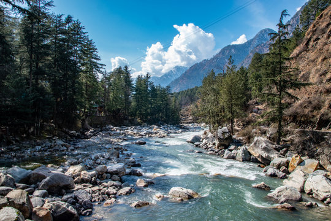

MANALI
Located in the Kullu Valley of Himachal Pradesh, Manali is a popular hill station renowned for its stunning landscapes, adventure activities, and vibrant culture. Surrounded by snow-capped mountains, dense forests, and meandering rivers, Manali offers a perfect retreat for nature lovers and adventure enthusiasts alike. Visitors can indulge in activities such as trekking, paragliding, river rafting, and skiing (during the winter months) amidst the breathtaking scenery of the Himalayas. Additionally, Manali is dotted with ancient temples, quaint villages, and bustling markets, providing a unique blend of adventure, culture, and tranquility.

Places near by:
1.Hidimba Temple :
Located amidst the snow-covered hills of Manali, the Hadimba Temple is a unique shrine dedicated to Hidimba Devi, who was the wife of Bhima and mother of Ghatothkach. Surrounded by gorgeous cedar forests, this beautiful shrine is built on a rock which is believed to be in the image of goddess Hidimba herself. Locally known as Dhungari Temple, the construction style of the Hidimba Devi temple is entirely different from that of any of the other temples, with its wooden doorways, walls, and cone-shaped roof. This temple is a fitting dedication to its presiding deity Hadimba.
2.Paragliding in Kullu Manali, Manali Overview :
The hillside town of Manali is famous for paragliding. At 2050 metres above sea level, it is an ultimate location for the sport, with its beautiful green valleys, stark blue skies, and snow-capped mountain peaks. The picture-perfect valley boasts of ideal wind conditions for paragliding and is thronged by both international and domestic tourists. Starting with a basic training course, the operators are well organized, competent and trustworthy.
3.Solang Valley, Manali Overview :
When heading to Manali for a vacation, two absolutely essential destinations in the itinerary are Rohtang and Solang Valley. 14 kilometres to the north west of the main town of Manali, Solang Valley is one of the most popular tourist destinations in Himachal Pradesh. Situated on the way to Rohtang from Manali, every year the valley welcomes tourists in huge numbers. A favourite for adventure enthusiasts, parachuting to paragliding, horse riding to driving mini-open jeeps specially available for tourists of all age groups, Solang Valley has it all